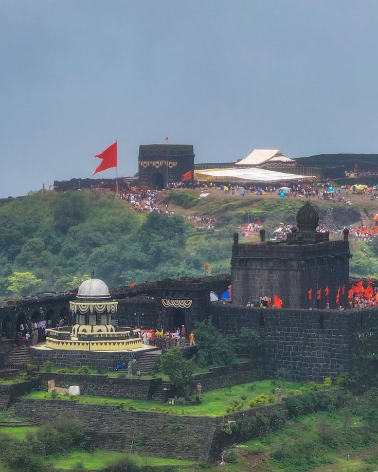
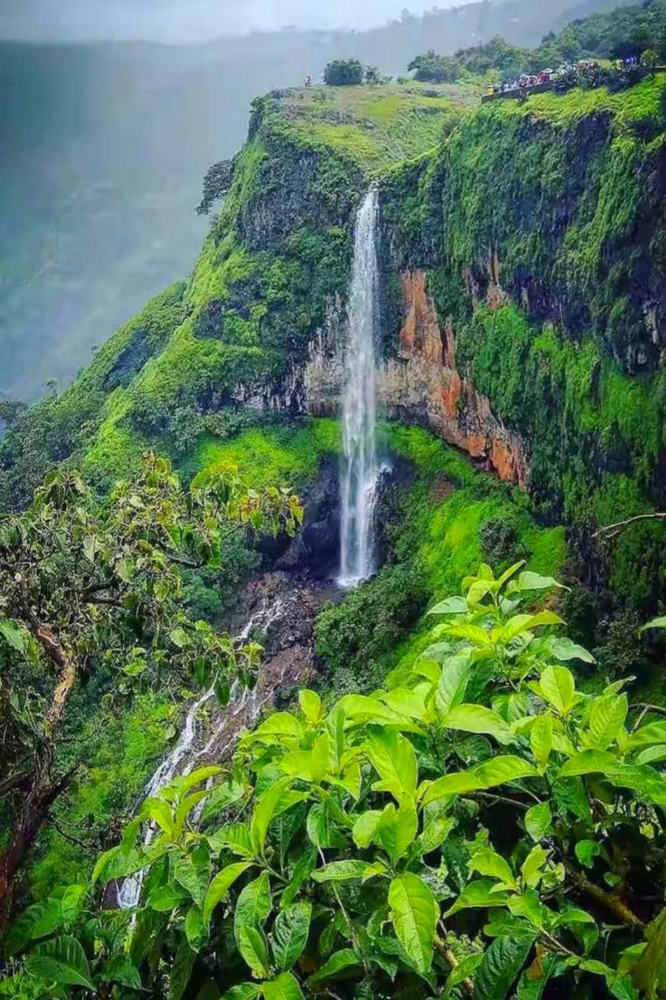
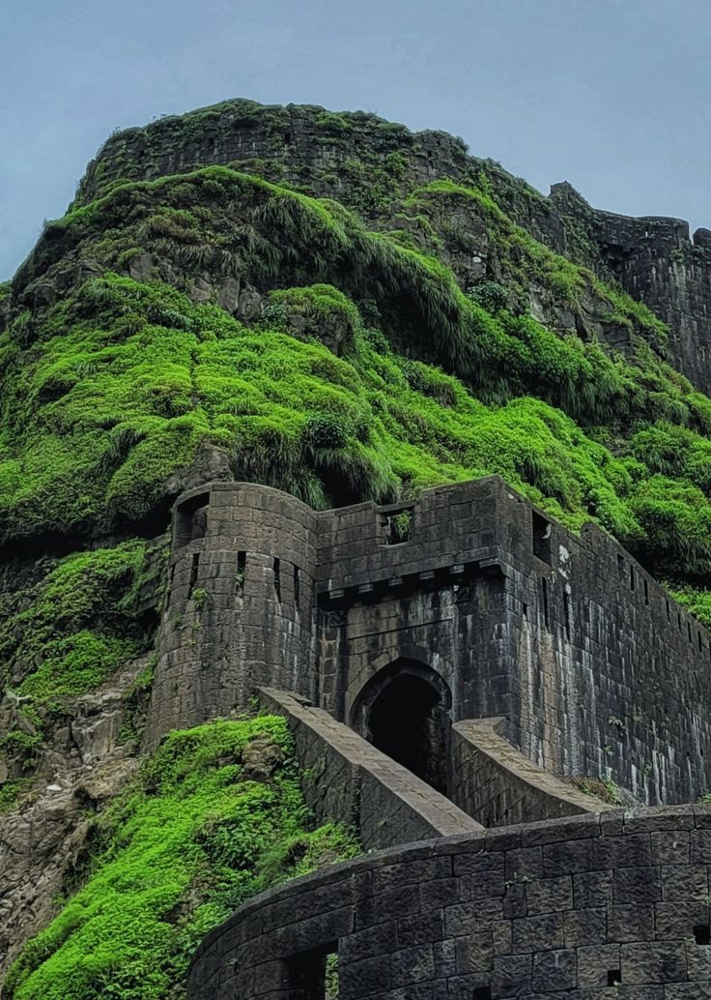
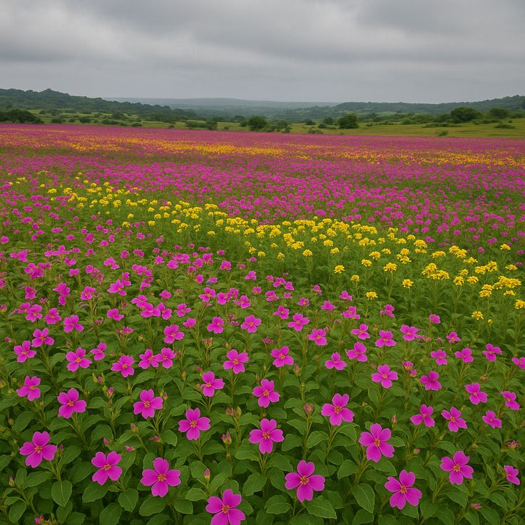
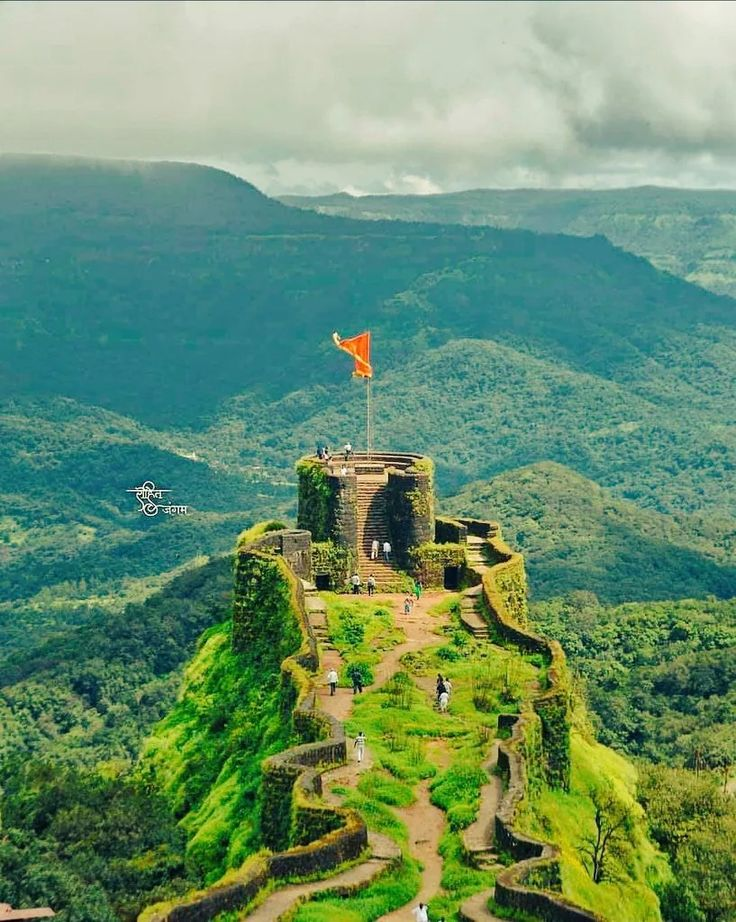
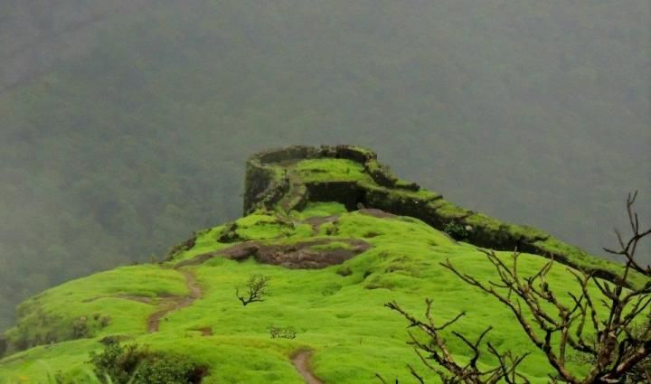
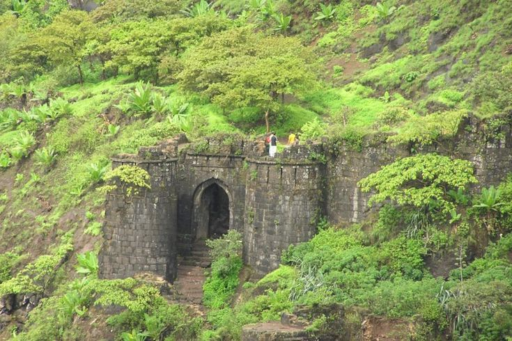

1. Raigad Fort

The capital of Swarajya and the king of forts. It houses the sacred Samadhi of Chhatrapati Shivaji Maharaj.
2. Mahabaleshwar

Known as the Queen of Sahyadri, this hill station is famous for its strawberries and scenic viewpoints.
3. Kalsubai Peak

The highest peak in Maharashtra. It is the top choice for trekkers seeking adventure and panoramic views.
4. Harishchandragad

Famous for the breathtaking 'Konkan Kada' cliff and the ancient Kedareshwar cave temple.
5. Lohagad Fort

A mighty fort near Lonavala. It becomes a paradise during the monsoon with lush greenery and clouds.
6. Kaas Plateau

A UNESCO World Heritage site known as the 'Plateau of Flowers,' home to various endemic species.
7. Malshej Ghat

A picturesque mountain pass famous for its numerous waterfalls, mist, and migratory flamingos.
8. Pratapgad Fort

An iconic fort where Chhatrapati Shivaji Maharaj famously defeated the tyrant Afzal Khan.
9. Rajmachi Trek

A beautiful trekking trail between Lonavala and Karjat, featuring twin forts and stunning valley views.
10. Sinhagad Fort

A popular fort near Pune, witness to the legendary bravery of Tanaji Malusare.